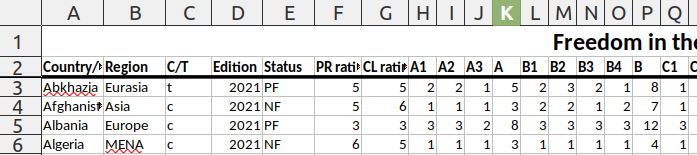
Today’s Agenda
Four Principles of Data Analysis
Report on your early findings
Audit the data
Justin Leinaweaver (Spring 2024)
Report 1
Why is this project important?
How confident should we be in the methodology?
What do the measures currently show us?
How are these measures changing across time?
For Today
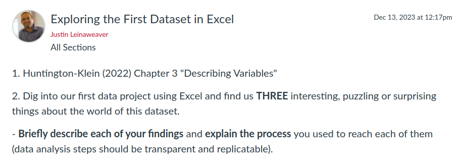
The Key Principles of Data Analysis
Data analysis is not a linear process
Always tidy your data before exploring it
Variable type determines the tool
Validity and reliability come first!
1. Data analysis is not a linear process

2. Tidy your data before exploring it

“Freedom in the World”
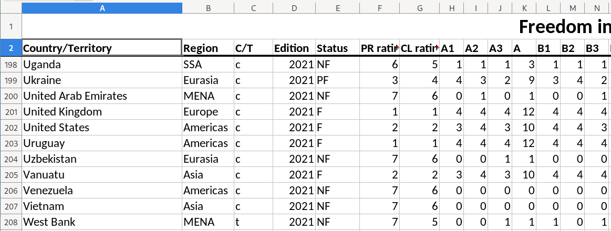
(Source: Freedom House)
“Freedom in the World”
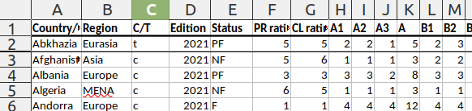
“Freedom in the World”
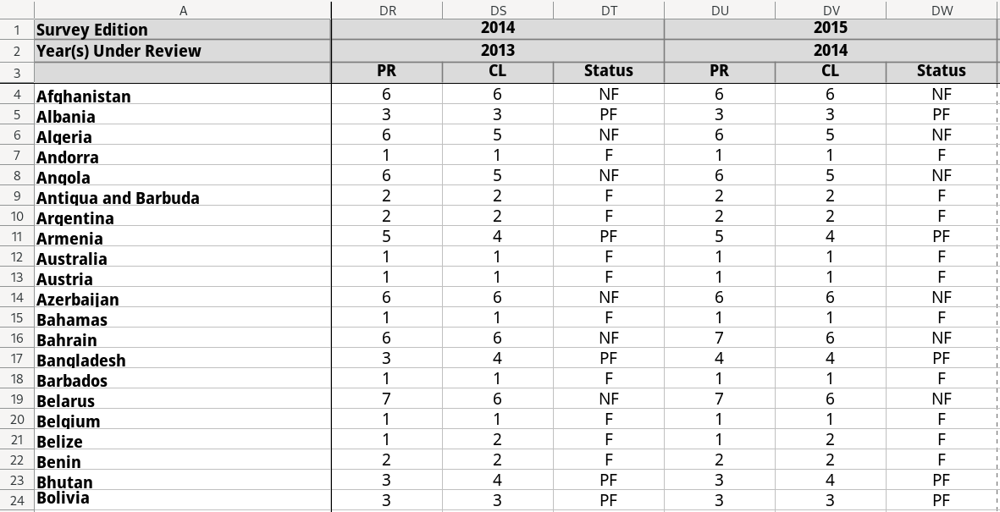
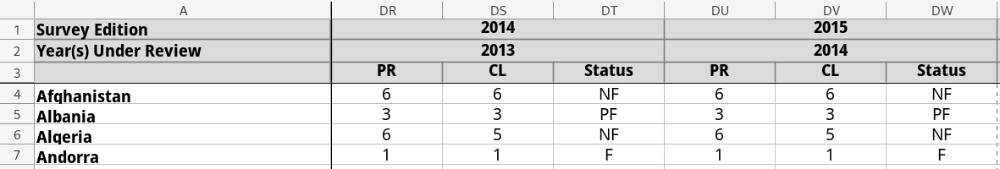
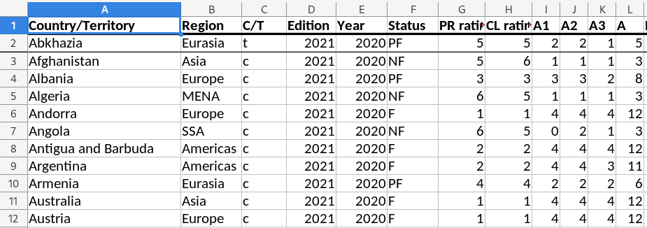
2. Tidy your data before exploring it
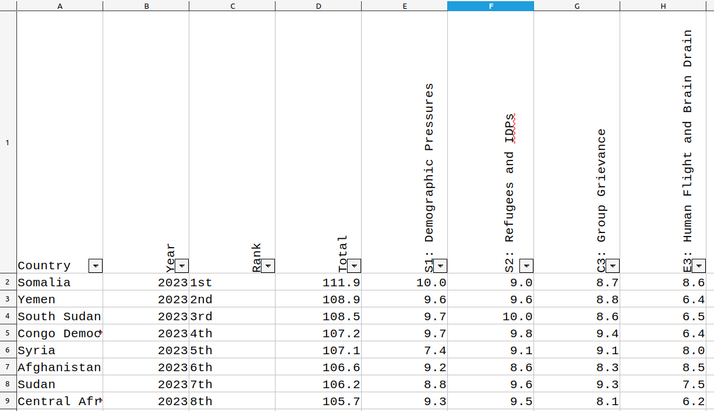
3. Variable type determines the tool

3. Variable type determines the tool
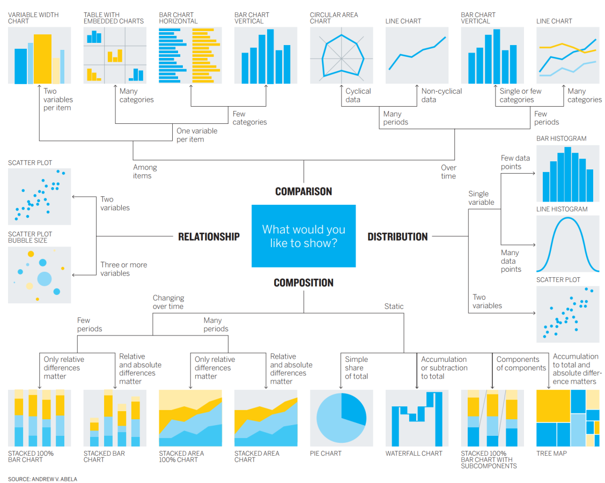
4. Evaluate Validity & Reliability
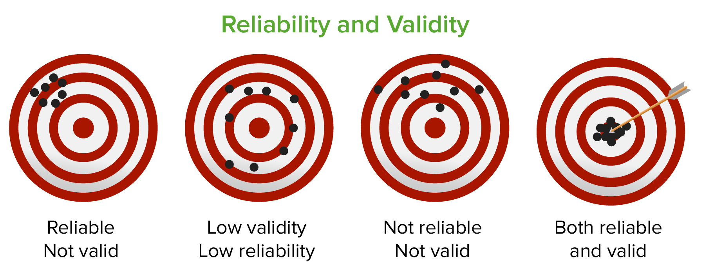
The Key Principles of Data Analysis
Data analysis is not a linear process
Always tidy your data before exploring it
Variable type determines the tool
Validity and reliability come first!
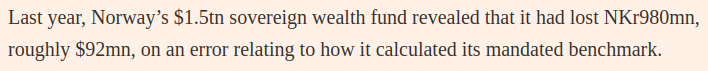
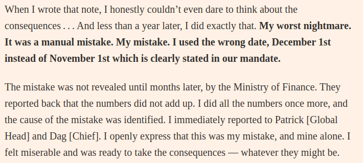
Report 1: Section 2
How confident should we be in the methodology?
Source: Where does the raw data come from?
Operationalization: Defining the concepts
Instrumentation: Designing the tool
Measurement Process: Using the tool
Validation: Checking the data
For Today
For Next Class
Tidy our new dataset
Long and Teetor (2019) Sections 1.1 and 1.2
Healy (2019) Sections 2.1 - 2.4
(optional) Install R and RStudio on your computer